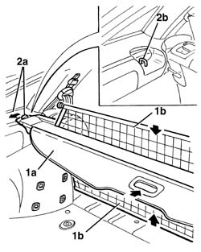

7040B28 PET transport PROTECTION and load carrying compartment COVER COMBINATION BLIND - R.R.
- Path
- Procedures > 70 FITTINGS > 7040 BODYSHELL INTERIOR TRIMS AND FITTINGS > 7040B luggage compartment and load platform trims > 7040B28 PET transport PROTECTION and load carrying compartment COVER COMBINATION BLIND - R.R.
- Kind
- repair procedure (removal / refitting; the operation number is the code)
- Applies to
- all engines; all production periods
- Interactive page
- https://sloeber94.github.io/elrnDB-a156/en/#/3238814
Applies to: all engines; all production periods; only with equipment: Station Wagon
 Removing
Removing
 Refitting
Refitting1. If extracted, reposition the blind (1a) and the grilles (1b).
2. Move the side pins (2a) in the direction of the arrow and remove the blind assembly, releasing it from the strikers (2b).

Applies to: all engines; all production periods; only with equipment: Station Wagon
Refitting
RemovingCheck that the blind assembly is not damaged.
Position the blind assembly and engage it with the strikers.
Topics that link to this page (33)
- 1040A10 fuel tank - r + r and decant fuel
- 1040A14 fuel tank - r + r for replacement
- 1040A66 Fuel LEVEL GAUGE for submerged pump assembly - Replace.
- 1040A70 submerged pump assembly complete with level guage control - r + r
- 1040B36 rear fuel delivery line - r r
- 1040B56 fuel return line - r r
- 4420A10 l/h or r/h rear suspension spring/damper unit (one) r+r
- 4420A12 rear suspension damper (one), lh or rh - for mcpherson strut system - includes dismentling/rebuilding of assembly at bench r r
- 5580E30 receiver for car alarm remote control - r r
- 7015B44 tail gate catch control cable - r+r
- 7025C32 fuel filler flap catch control - r+r
- 7035C10 Third SIDE WINDOW (one), left or right (bonded type) - R.R. - Includes. cleaning edges of window and housing in bodyshell
- 7035C14 fixed rear side window one lh or rh r r includes cleaning of housing
- 7040B06 side trim (one) lh or rh, load compartment/load platform - r r
- 7040B30 l/h or r/h side support (one) for load platform cover blind - arrange
- 7040B31 LOCK for COMBINED load carrying compartment COVER and PET transportation PROTECTION (one), left or right - R.R .
- 7040B32 LOCK STRIKER for COMBINED BLIND COVERING load carrying compartment and PET transporter PROTECTION (one), left or right - R.R.
- 7040H10 roof panel lining - r r
- 7040H16 roof panel lining - r r
- 7040H42 rear pillar trim - r r
- 7040H62 rear window surround trim one lh or rh r r
- 7050A13 SPLIT rear. seat LEFT BACKREST- R.R.
- 7050A15 SPLIT rear. seat RIGHT BACKREST- R.R.
- 7050A35 Backrest FRAME for (second row), side seat left or right - R.R.
- 7050A43 ATTACHMENT/RELEASE DEVICE for one SPLIT rear seat BACKREST. -R.R.
- 7050A70 lh or rh device with cable (one) of one rear seat squab catch r r
- 7065B10 l/h or r/h rear safety belt (one) - r+r
- 7065B18 CENTRE REAR SEAT BELT - R.R.
- 7065B26 cable for attaching releasing rear central seat belt reel r r
- 7065B28 Rear seat belt HEIGHT ADJUSTER , (one), left or right - R.R.
- 7065B40 Rear seat belt reel mounting BRACKET , (one), left or right - R.R .
- 7095B66 TAILGATE LEFT integrated WIRING - R.R.
- 7095B68 TAILGATE RIGHT incorporated WIRING - R.R.